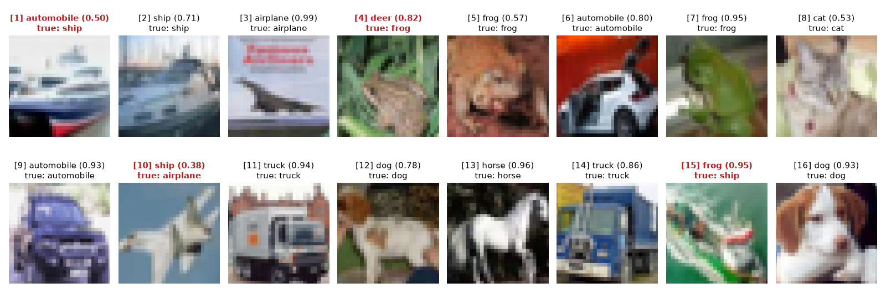

The Activity
Unit 9 · Run 11 November 2026 · Tutor: Dr Elizabeth Oladapo · Evidences learning outcomes 1 and 2
Activity guidance: read Wall (2019) and record my thoughts on the ethical and social implications of this technology, run the supplied convolutional neural network (CNN) on the CIFAR-10 images (Krizhevsky, 2009) and review its sections, then change the test image from 16 to one of 1 to 15 and see whether the model predicts correctly.
Findings
| Step | What I did | Result |
|---|---|---|
| Supplied run (40,000 training images) | Made three run fixes for current Keras and ran the model as supplied | Early stopping ended after 7 epochs. The lowest validation loss came at epoch 5, but the final weights are from epoch 7. Test accuracy 0.639 on 10,000 images; the supplied file’s saved run gave 0.670. |
| Errors by class | Named the classes and counted the most common mistakes | Recall ran from 0.52 for birds to 0.77 for frogs. The model labelled 233 dogs as cats and 177 cats as dogs. |
| Test images 1 to 15 | Changed the test image from the supplied 16 | 11 of 15 correct. Wrong: 1 (ship called automobile), 4 (frog called deer), 10 (airplane called ship) and 15 (ship called frog, confidence 0.95). |
| My image 7 | Chosen before the run | A frog, predicted frog with a confidence of 0.95. |
| Confident errors | Counted wrong predictions by the model’s confidence | 330 of the 3,609 errors came with a confidence of 0.9 or more. Average confidence was 0.81 when right and 0.60 when wrong. |

A single accuracy of 64% hid uneven errors: the model found 77% of frogs but 52% of birds, and labelled 233 dogs as cats. It was also confidently wrong: 330 errors came with a confidence of 0.9 or more, like image 15, a ship called a frog. Wall (2019) reports the same pattern in facial recognition, where error rates differ by skin tone and gender and a confident wrong match can mean a wrongful stop. Reviewers need error rates by group, not one score.
Evidence
I ran the notebook in Google Colab with a GPU. Its first code cell records the run, and all 56 code cells completed without errors:
Run by Anne Dayer (student 39359) in Google Colab on 11 November 2026 at 14:27 UTCAI Acknowledgement
Codex was used to assist in identifying appropriate code solutions and to proofread and refine the code I produced. Claude and Grammarly supported proofreading, language refinement, and formatting of my written text. All final decisions, analyses, interpretations, conclusions, and recommendations are my own.
References
Krizhevsky, A. (2009) Learning Multiple Layers of Features from Tiny Images. Technical report. Toronto: University of Toronto. Available at: https://www.cs.toronto.edu/~kriz/cifar.html (Accessed: 11 November 2026).
Wall, M. (2019) ‘Biased and wrong? Facial recognition tech in the dock’, BBC News, 8 July. Available at: https://www.bbc.com/news/business-48842750 (Accessed: 20 October 2026).